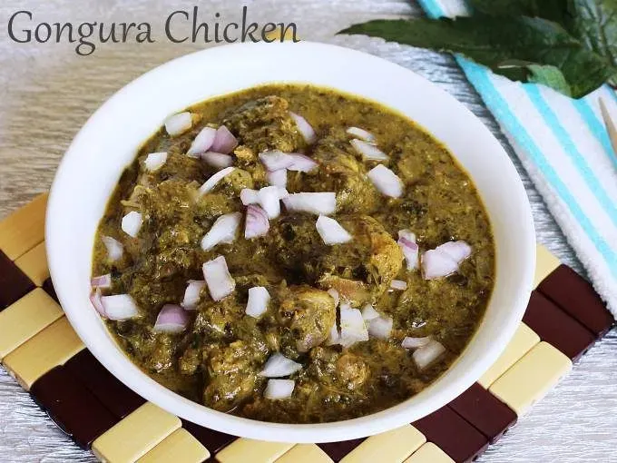

Gongura
Home

Gongura chicken
A flavor-packed Gongura Chicken (Andhra style)
Ingredients
- Chicken – 500g
- Gongura (sorrel leaves) – 2 cups (washed, roughly chopped)
- Onions – 2 (sliced)
- Green chilies – 2 (slit)
- Ginger-garlic paste – 1 tbsp
- Red chili powder – 1 tsp
- Turmeric
- Garam masala
- Salt
- Oil
- Mustard & cumin seeds
- Curry leaves
Steps
- In a pan, sauté the sorrel leaves without water until soft and mushy (5–7 mins). Let it cool and grind into a paste.
- In another pan, heat oil. Add mustard seeds, cumin, curry leaves, green chilies. Sauté onions until golden. Add ginger-garlic paste and cook until raw smell goes.
- Add chicken, turmeric, chili powder, salt. Sauté for 5–7 minutes on high. Cover and cook on medium until chicken is almost done (add a little water if needed).
- Mix in the cooked gongura paste. Let it simmer with the chicken for 10–15 minutes until oil separates and chicken is fully tender.
- Sprinkle garam masala, stir well, and cook for another 2–3 minutes. Turn off heat.